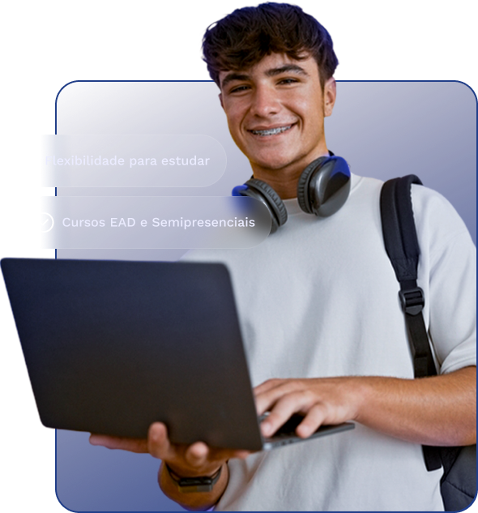

no seu
ritmo.
ritmo.
Mais autonomia para estudar no seu ritmo
Tenha liberdade para organizar seus horários e estudar quando for mais conveniente — ideal para quem trabalha ou cuida da família.
Na Cruzeiro do Sul Virtual – Polo Americana Centro, você conquista o diploma que sempre sonhou com autonomia, suporte de qualidade e um valor que realmente faz sentido para o seu momento.
Essa é a oportunidade de transformar sua realidade com cursos EAD e Semipresenciais de Graduação além dos cursos de Pós-Graduação.

cursos de Graduação
cursos de Pós-Graduação
polos pelo Brasil
ingresso em qualquer mês do ano
Um polo de apoio presencial pertinho de você. Aqui, você tem acesso à estrutura da Cruzeiro do Sul Virtual, com orientações, apoio acadêmico e atendimento sempre que precisar. Tudo para garantir que sua experiência acadêmica seja completa e eficiente.
Tenha liberdade para organizar seus horários e estudar quando for mais conveniente — ideal para quem trabalha ou cuida da família.
Mensalidades acessíveis e redução de gastos com transporte, alimentação e materiais físicos. Você investe menos e aprende mais.
A mesma validade e seriedade dos cursos presenciais, com diploma reconhecido e professores altamente qualificados.
Ambiente virtual fácil de usar, com videoaulas, fóruns, exercícios e conteúdos atualizados — tudo a um clique de distância.
Você não estuda sozinho. Conte com atendimento personalizado, tutores preparados e canais de suporte sempre disponíveis para tirar dúvidas e orientar seu progresso.
Na Cruzeiro do Sul Virtual, você pode iniciar sua faculdade ou pós-graduação em qualquer mês do ano. Não adie seu futuro!
Oferecemos mais de 100 cursos de Graduação e mais de 90 de Pós-Graduação, todos reconhecidos e regulamentados pelo MEC.
Conheça todos os cursosSe a sua cidade não possui um polo, não tem problema: com Cruzeiro do Sul nenhuma distância te impede de realizar o seu sonho, até as provas são online. Mas se você está em Americana-SP, aproveite toda a estrutura do nosso polo presencial no Centro da cidade.
Chegou a hora de dar o próximo passo. Você merece estudar com liberdade, suporte e reconhecimento.
Não encontrou o que procurava? A equipe do polo responde pelo WhatsApp.
Garantir Minha Vaga AgoraSim. Todos os cursos da Cruzeiro do Sul Virtual são reconhecidos pelo MEC, e o diploma tem o mesmo peso e validade dos cursos presenciais.
As provas são realizadas no ambiente virtual de aprendizagem. Você também pode fazer presencialmente no polo utilizando o laboratório de informática, caso seja necessário.
Sim. Um dos grandes diferenciais da Cruzeiro do Sul Virtual é a flexibilidade de ingresso. Você pode começar sua graduação ou pós-graduação no mês que for mais conveniente para você.
Você não estará sozinho(a). Além da plataforma intuitiva, você terá acesso a tutores, materiais completos e apoio direto do polo presencial em Americana.
Com certeza. A pós EAD foi criada justamente para profissionais que têm uma rotina intensa. Você acessa os conteúdos no seu ritmo e consegue conciliar os estudos com o trabalho e a vida pessoal.
Você pode se matricular diretamente pelo site da Cruzeiro do Sul Virtual ou visitar o Polo Americana Centro. Lá, a equipe está pronta para te orientar em todas as etapas, desde a escolha do curso até o início das aulas.